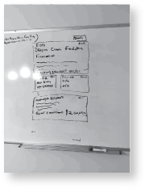

Brief
Another designer and I were tasked with this project shortly after we were hired. We had no background knowledge of what this was or what it was supposed to do, only vague introductions. We didn’t even know if this was something that could have any impact at all. But none the less, we started working because we were eager to complete work that brought value to the company and eager to design. The Indication of Interest or IOI as it’s also known, is a way of communicating a client’s interest to invest in a specific fund.
Problem
The project prior to getting our hands on it, had failed 3 times prior with solutions that did not meet the needs. This was the last attempt to bring something of value to our users. The previous implementations tried utilizing existing technologies to bring together a solution (i.e. outlook, SharePoint) but failed by not taking into account how the Investment Analyst and Directors worked and did not identify what was most important to them in this process.
Currently, the Analyst and Directors manually curated and managed everything through email. Using email for this process is tiresome and extremely prone to error. Emails get lost in the inbox thread and clients are not shown opportunities because an Analyst or Director forgot about an email that was lost in the slew of other messages.
This is not helping the firm at all and is potentially losing the firm and clients millions of dollars. This process has to be managed in a better way. We were only given a few weeks to complete this project by.
What is an IOI?
The Indication of Interest is actually a method of communication and is mostly represented by a form and sometimes represented in an excel sheet. An IOI is a signifier by a Fund Manager to identify potential interested Investors for a newly created fund. What this does, is it allows Fund Managers to gather information and promises or IOUs from potential investors or clients that they will invest X amount of dollars into the fund.
Diving into IOIs
The first step we took was to understand what IOIs look like and how they are managed in the organization. The IOI process is almost completely handled through email and sending along a spreadsheet with relevant information. The rest of it is managed with bulletin like pages on a SharePoint site.
Initially, we conducted a discover phase and scoured the organization for artifacts of previous IOIs. We stumbled upon previous emails and SharePoint pages with information containing IOIs. This took a lot of time since we had no help or idea where to find these items but were able to pull together…
- 20 or so examples of IOIs
- 50 or so emails of individuals going back and forth about the IOI for a different funds.
Information Architecture

After looking through these documents we started to get a good idea of what the process was and the pain points within this process. The next step was to figure out how to organize all the information. From our discovery phase we had found all the necessary data that would be needed within an IOI.
The next step was to figure out what was the best way to organize all this information. To do this we chose to do a Card Sorting activity and came up with groups of data.
Site Map
With our data grouped in way that made the most sense, we took our groups along with the information found in the discovery phase and determined what the structure of the application should be.
We created a Site Map that would lay out the pages in the application to show how the content should be grouped.
Wireframes
After putting together the Site Map, the next step was to start designing the wireframes. We started by white boarding together and came up with a few different solutions. After evaluating the solutions we settled on one.
We tried many different ways to display the data but ultimately we decided to go with a card based approach. There was a lot of information for a user to take in, so a card based approach would segment the information into digestible chunks.

Mockups & Specs
After getting the wireframes to a point where we felt confident that we covered all scenarios, we designed high fidelity mockups with specs. Our approach was to create mockups of a few pages which covered all patterns and components as to not duplicate efforts. Then we would design the other pages as we progressed in the prototyping phase. We did this so it would be easier on us when creating the prototype and allowed us to collaboratively work to develop the final presentation.
Prototype
Once the mockups and specs were completed we started working on the prototype. The prototype was developed using HTML, CSS, SASS, Javascript, Angular, and Gulp.
The prototype was very helpful in finalizing all our ideas we had came up with on the wireframes and mockups. It allowed us to see if our designs actually worked before showing the stakeholders.
Conclusion
The prototype proved to be extremely useful in gaining stakeholder approval. The ability to show how one would move through the app and how to use it with a working prototype gave us a leg up when explaining the benefits of our design.
This was a tough project without any guidance but eventually it all came together with a little elbow grease. With the short deadline we were able to come together and create something that gave the users exactly what they needed.
This solution is much better than the current one and has reduced errors and streamlined communication between all parties involved in the IOI process. Essentially saving the company lost money from missed opportunities and saving employee time from being wasted with unnecessary back and forth emails.
Currently, the application is in use by Investment Analyst and Directors at Cambridge Associates as of March 2017.